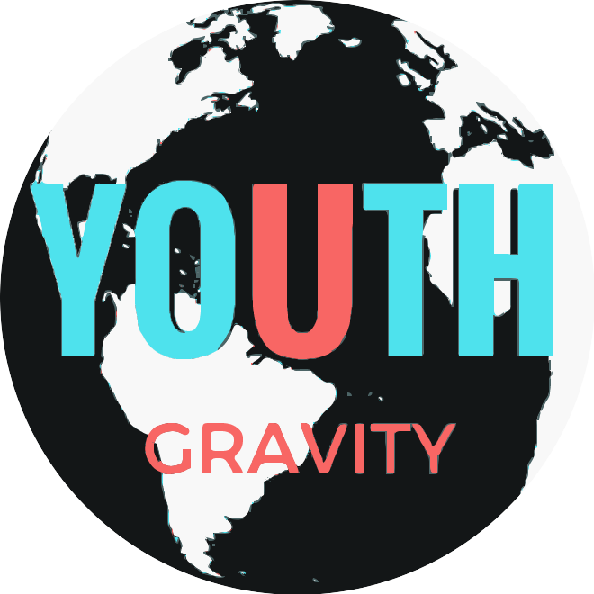
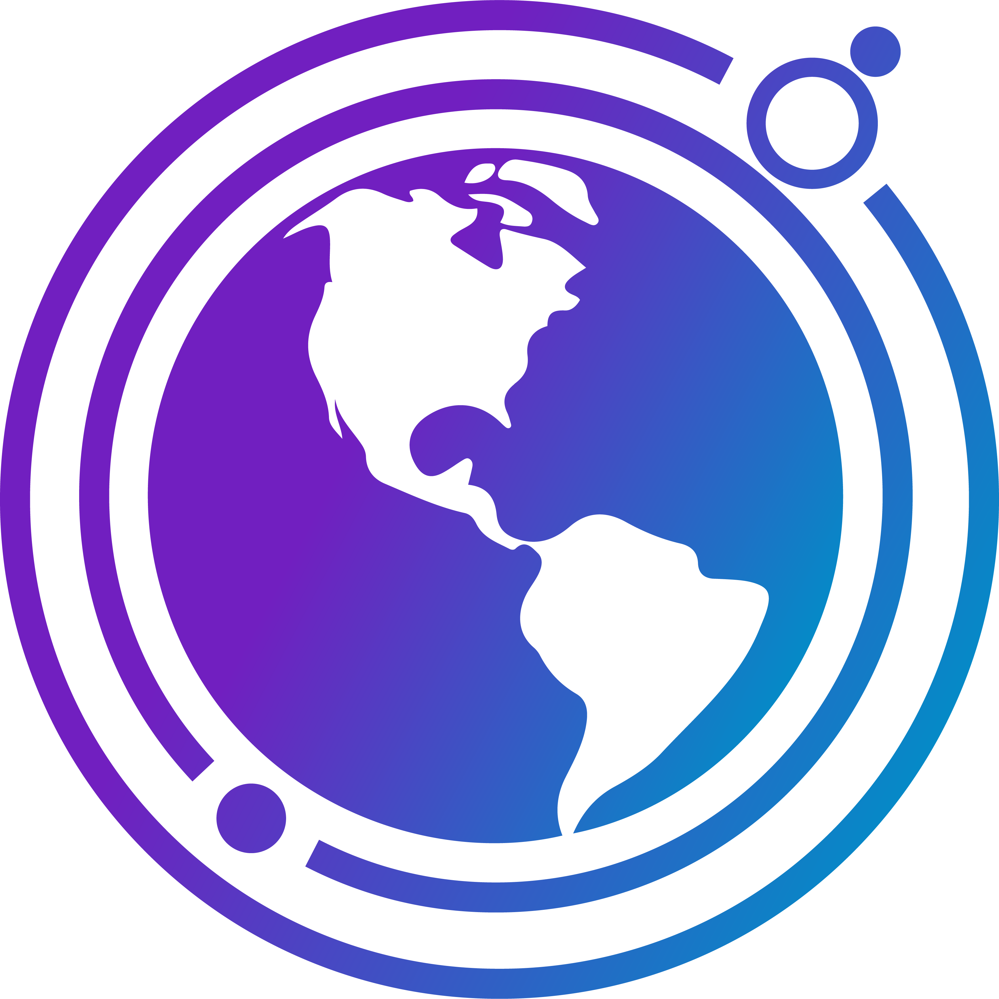
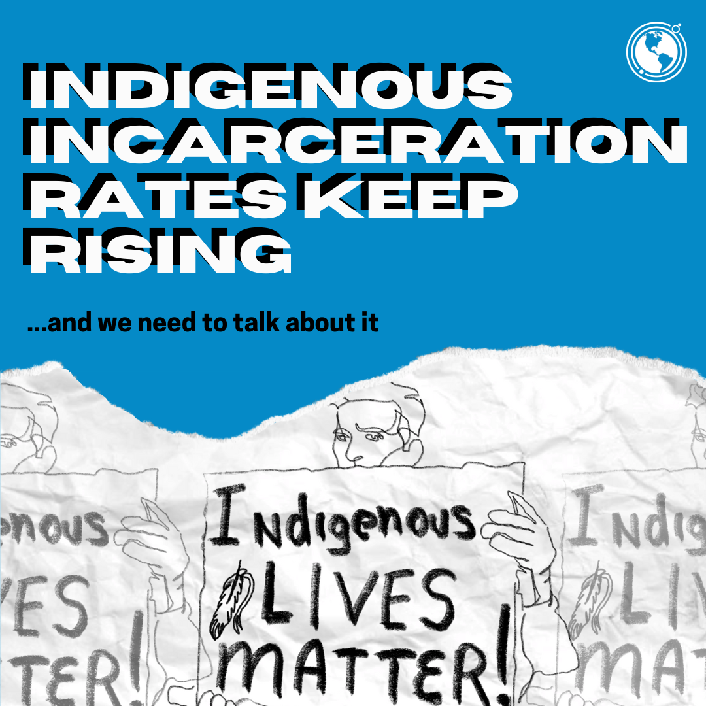
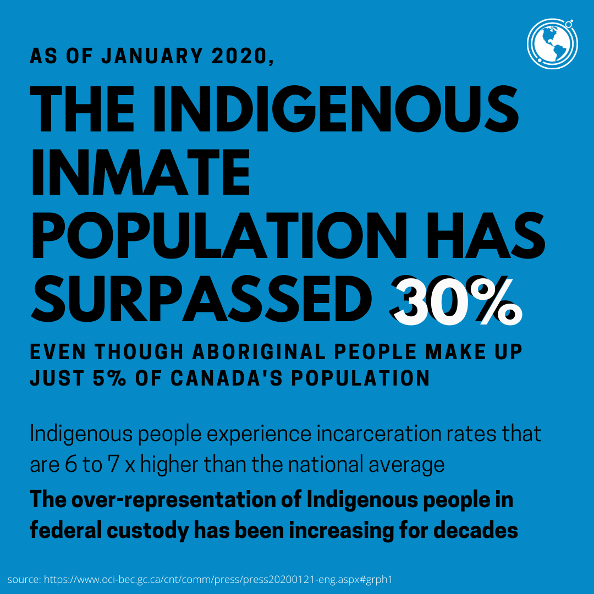
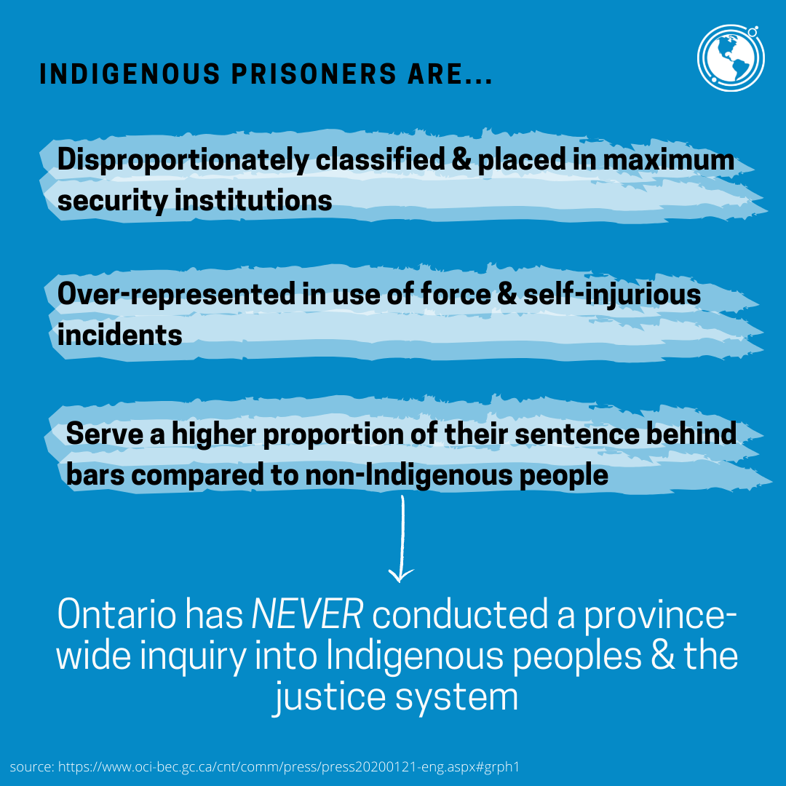
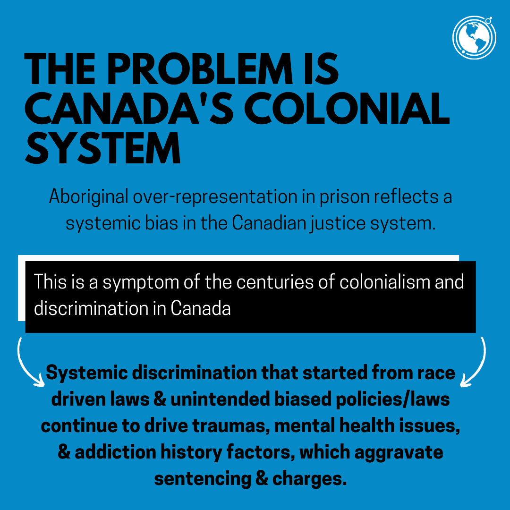

Youth Gravity — Identity & Impact the Outcome
Nonprofit rebranding, youth engagement, digital communications, data visualization and impact reporting.

Project overview
Youth Gravity is a Toronto youth-led nonprofit. My work included refreshing the organization's visual identity and developing communications to support youth engagement and outreach for its Impact the Outcome initiative.
The project combined branding, digital marketing, content development, data analysis and report design. In addition to producing creative materials, I analyzed data collected through the initiative and developed visualizations to communicate its findings and outcomes.
I was also responsible for putting together the final Culmination Report, bringing together research findings, data visualizations, written content and graphic design into a cohesive publication for stakeholders.
Project objectives
- Refresh Youth Gravity's visual identity and establish consistent branding across communications.
- Develop digital outreach materials and messaging to engage young people with the Impact the Outcome initiative.
- Support campaign participation through social media and stakeholder communications.
- Analyze collected project data to identify and communicate meaningful findings.
- Design data visualizations and assemble a comprehensive final impact report.
01 / Brand identity & visual design
I redesigned Youth Gravity's visual identity to create a more cohesive and recognizable presence across its communication channels.
The branding work included developing visual assets and communication materials that could be used across organizational initiatives and youth outreach activities.


02 / Digital communications & outreach
I developed social media content and communication materials to support the organization's outreach and engagement with young audiences.
This involved coordinating campaign messaging, producing digital assets and ensuring visual consistency across communications related to the Impact the Outcome initiative.
Key contributions
- Developed social media content and digital campaign materials.
- Created stakeholder communications supporting youth engagement.
- Maintained consistent messaging and branding across communication channels.
- Supported the initiative's digital outreach and participation goals.
Selected communication materials




03 / Data analysis & visualization
Beyond branding and communications, I contributed to evaluating and documenting the outcomes of the Impact the Outcome initiative through data analysis.
I analyzed data collected throughout the project to identify findings that could be presented in the final report. This involved examining the available information and determining how best to communicate the results to stakeholders.
Translating data into visual information
I developed charts, graphics and visual summaries to make the findings easier to understand. The visualizations helped communicate the project's outcomes through accessible and engaging visual storytelling.
Connecting analysis with communication
The analytical work informed the report's visual presentation, allowing the findings to be communicated alongside the initiative's activities and broader impact.
This combined my experience in visual communication with data interpretation and reporting.
04 / Impact reporting & publication design
I was responsible for designing and assembling the final Impact the Outcome Culmination Report.
The report brought together the project's findings, data analysis, visualizations, written content and communication design in a single publication.
My work included organizing the report's content, developing visual layouts, incorporating data visualizations and preparing the final document to communicate the initiative's work and outcomes to stakeholders.
Impact the Outcome — Culmination Report
Explore the original report below, including the project's findings, data visualizations and publication design.
05 / Outcomes & impact
The branding and outreach activities supported measurable improvements in Youth Gravity's digital engagement and initiative participation.
Growth over three months
Exceeded the target of 80 participants
In addition to supporting outreach, the project resulted in a refreshed visual identity and a comprehensive Culmination Report documenting the initiative's findings and impact.
My contributions demonstrate the integration of brand development, digital communications, data analysis, data visualization and reporting within a nonprofit environment.
Project takeaway
This project strengthened my experience in combining communication design with research and data analysis. It demonstrated how visual storytelling can help nonprofit organizations communicate evidence, share outcomes and engage stakeholders.